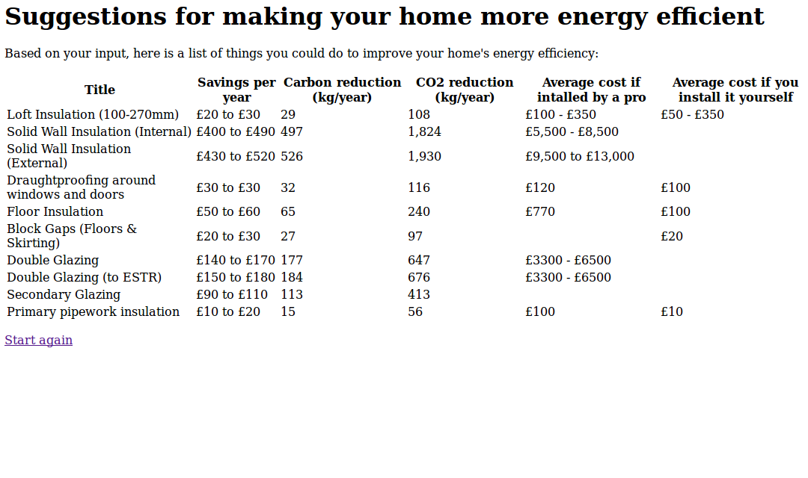

The project
This is a small web calculator written by Bruno Girin for Rewired State National Hack The Government Day, 2012. It uses a small data set on home insulation options for 3-bedroom semi-detached houses, provided as an Excel file in the day's dataset:
datasets/decc/est/est-3-bed-semi-data.xlsx
This file was converted to CSV prior to being used so that it can easily be read using the python language.
The resulting application is a small stand-alone web calculator that asks a number of questions about your house and finds suitable energy efficiency improvements. It displays a number of data items for each method, in particular the costs, savings and number of years needed for the investment to pay for itself.
The current version of the code is a Django 1.4 application.
How to start the web server
$ python manage.py runserver
You can then navigate to the web page at this address: http://localhost:8000/energy
Things that can be improved
- The presentation is very basic and would benefit from artwork and styling,
- The list of items returned should be ordered based on savings (either monetary or carbon savings) and grouped into categories.